시각화와 데이터 변형의 두 가지를 병행하면서 호기심과 의구심을 갖고 연구자가 자신의 관심사에 답을 구하는 탐색적 분석을 하는 과정
이 과정에서 모형을 세우고 데이터를 얼마나 잘 설명하는지를 살펴보고, 모형을 수정해 나가는 과정을 거침
First steps
Load packages
# numerical calculation & data framesimport numpy as npimport pandas as pd# visualizationimport matplotlib.pyplot as pltimport seaborn as snsimport seaborn.objects as soimport plotly.express as px# statisticsimport statsmodels.api as sm
left = ( so.Plot(mpg, x="displ", y="hwy", color="drv") # color mapping이 이후 모든 layer에 적용 .add(so.Dot()) .add(so.Line(), so.PolyFit(5)))right = ( so.Plot(mpg, x="displ", y="hwy") .add(so.Dot(), color="drv") # color mapping이 이 layer에만 적용 .add(so.Line(), so.PolyFit(5)))
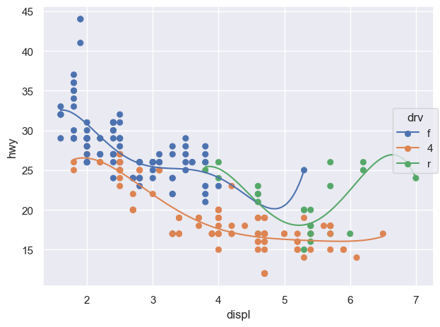
(a) color가 모든 layers에 적용: global mapping
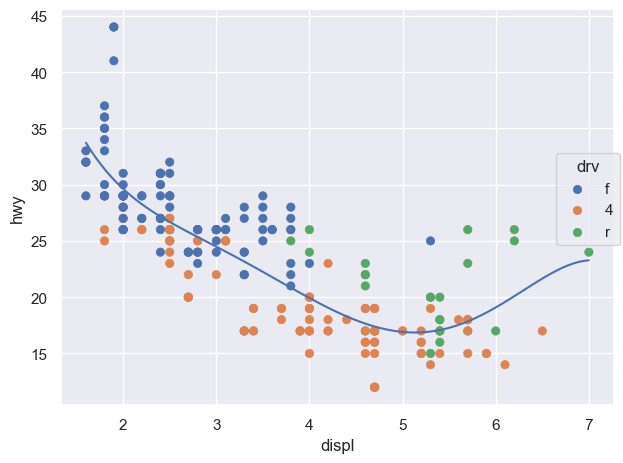
(b) color가 두번째 layer에만 적용: local mapping
Figure 4: Inherited mapping
( so.Plot(mpg, x="displ", y="hwy") .add(so.Dot(), color="drv") .add(so.Line(), so.PolyFit(5), group="drv") # color가 아닌 group으로 grouping)# 다항함수 fit의 특징 및 주의점
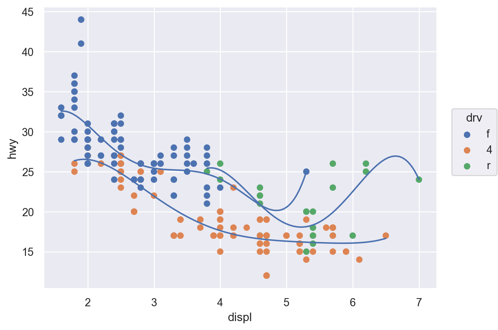
Linear fit vs. smoothing fit:
선형적인 트렌드에서 얼마나 벗어나는가?
( so.Plot(df, x=, y=, color=, ...) # global mapping .add(so.Dot(color=, pointsize=,...)) # mark object + setting properties .add(so.Line(), x=, y=, color=, ...) # local mapping .add(so.Line(), so.Polyfit(5)) # 통계적으로 변환한 값을 Line plot으로 표현 .add(so.Bar(), so.Hist(stat="proportion")) # 통계적으로 변환한 값을 Bar plot로 표현 ... .facet(col=, row=, wrap=) # 카테고리의 levels에 따라 나누어 표현)
Aesthetic mapping
위치(position): x축, y축
색(color), 크기(pointsize), 모양(marker), 선 종류(linestyle), 투명도(alpha)
global vs. local mapping
Geometric objects
Dot marks: Dot, Dots
Line marks: Line, Path, Dash, Range
Bar marks: Bar, Bars
Fill marks: Area, Band
Text marks: Text
Setting properties
Marks (.Dot(), .Line(), .Bar(), …) 내부에 속성을 지정하고, marks마다 설정할 수 있는 속성이 다름.
( so.Plot(tips, x="day") .add(so.Bar(), so.Count()) # category type의 변수는 순서가 존재. 그렇지 않은 경우 알바벳 순서로 )
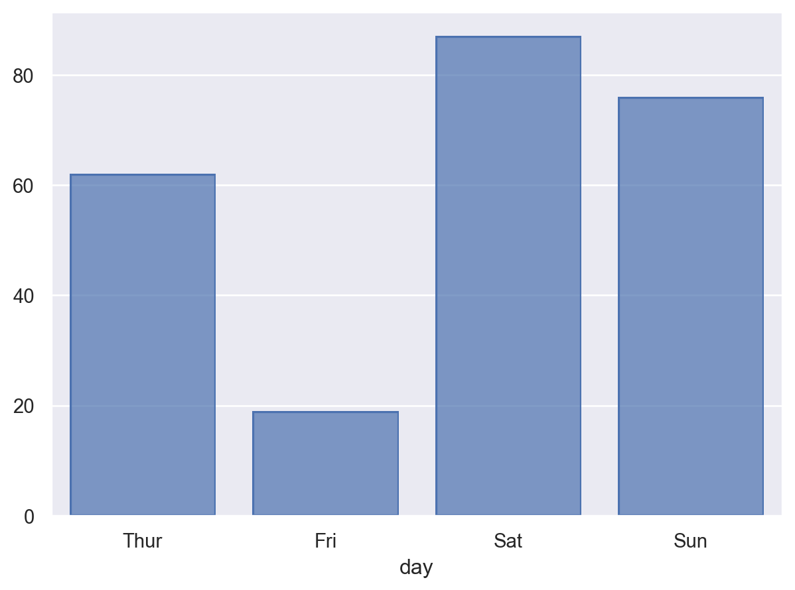
Note
복잡한 통계치의 경우 직접 구한후 plot을 그리는 것이 용이
count_day = tips[["day"]].value_counts(normalize=True).reset_index(name="pct")# day pct# 0 Sat 0.36# 1 Sun 0.31# 2 Thur 0.25# 3 Fri 0.08( so.Plot(count_day, x="day", y="pct") .add(so.Bar()))
penguins = sns.load_dataset("penguins") # load a dataset: penguins# Species에 inherent order가 없음; 알파벳 순으로 정렬( so.Plot(penguins, x="species") .add(so.Bar(), so.Count()))
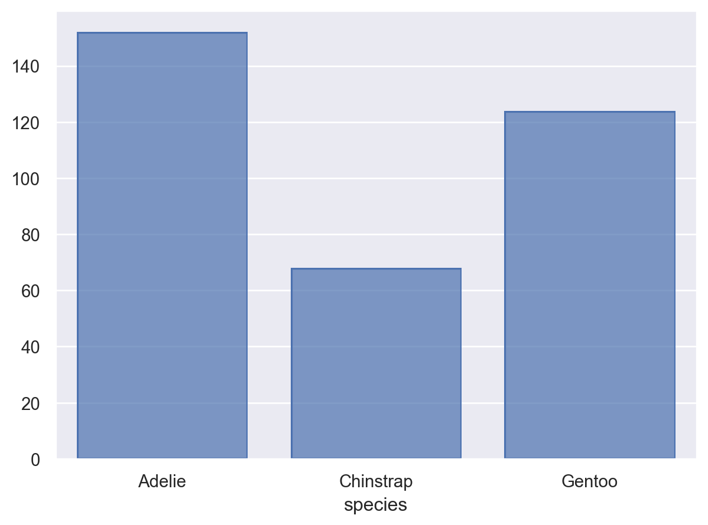
( so.Plot(penguins, x="species") .add(so.Bar(), so.Hist("proportion")) # Hist()의 default는 stat="count" .layout(size=(4.5, 3.5)))# grouping의 처리에 대해서는 뒤에... 에를 들어, color="sex"
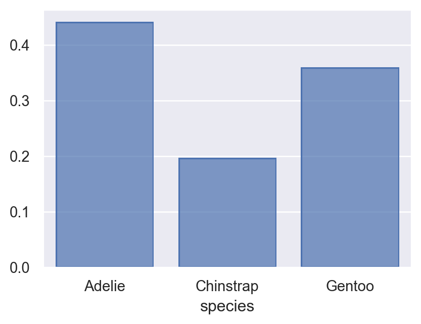
Important
표시 순서를 변경하는 일은 의미있는 플랏을 만드는데 중요
나중에 좀 더 자세히 다룸
# value_counts()는 크기대로 sorting!cl = penguins["species"].value_counts().index.values#> array(['Adelie', 'Gentoo', 'Chinstrap'], dtype=object)( so.Plot(penguins, x="species") .add(so.Bar(), so.Count()) .scale(x=so.Nominal(order=cl)) # x축의 카테고리 순서를 변경)# 직접 개수를 구해 그리는 경우, 테이블의 순서대로 그려짐( so.Plot(penguins["species"].value_counts().reset_index(), x="species", y="count") .add(so.Bar()))
A numerical variable
( so.Plot(penguins, x="body_mass_g") .add(so.Bars(), so.Hist()) # Histogram; x값을 bins으로 나누어 count를 계산!# .Bars()는 .Bar()에 비해 연속변수에 더 적합: 얇은 경계선으로 나란히 붙혀서 그려짐)
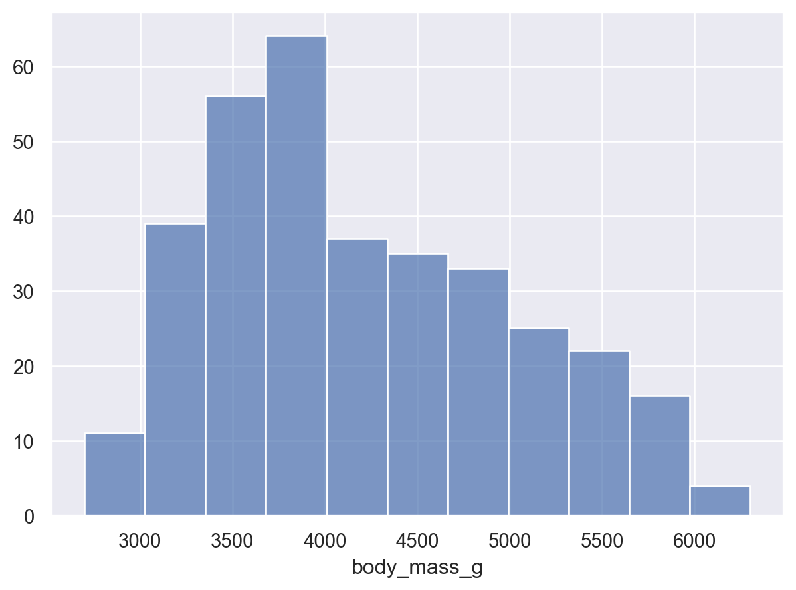
left = ( so.Plot(penguins, x="body_mass_g") .add(so.Bars(), so.Hist(binwidth=100)) # binwidth vs. bins)right = ( so.Plot(penguins, x="body_mass_g") .add(so.Bars(), so.Hist(bins=10)) # binwidth vs. bins)
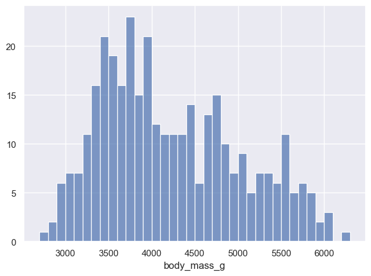
(a) binwidth=2
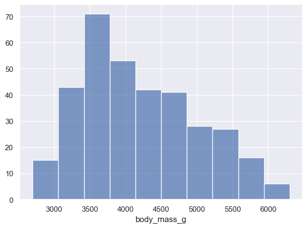
(b) bins=5
Figure 5: binwidth vs. bins
( so.Plot(penguins, x="body_mass_g") .add(so.Bars(), so.Hist("proportion")) # 비율을 계산; stat="count"가 default)
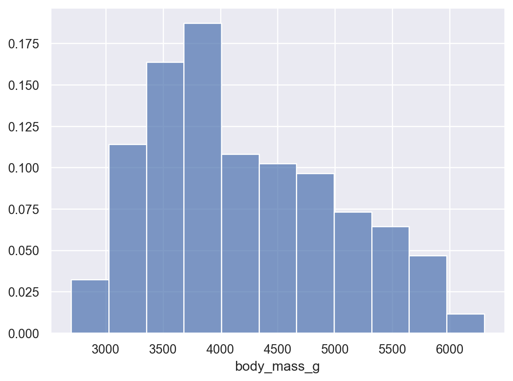
# Density plot: 넓이가 1이 되도록( so.Plot(penguins, x="body_mass_g") .add(so.Area(), so.KDE()) # Density plot)
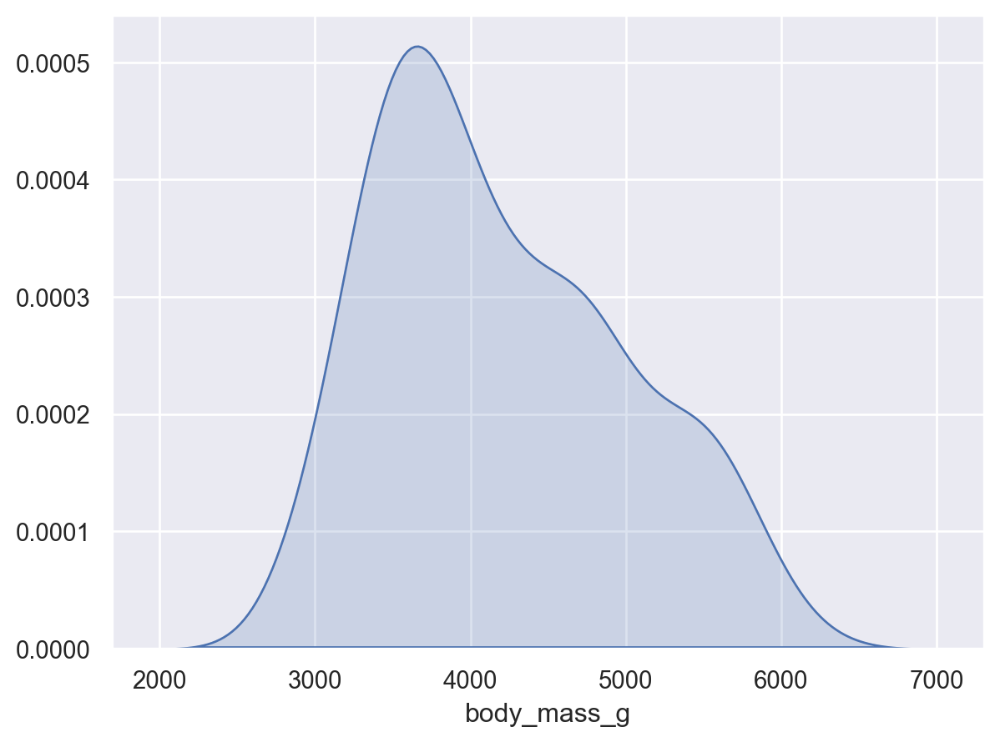
# Density plot: 넓이가 1이 되도록( so.Plot(penguins, x="body_mass_g") .add(so.Line(color="orange"), so.KDE(bw_adjust=.2)) # Density bandwidth: binwidth에 대응 .add(so.Bars(alpha=.3), so.Hist("density", binwidth=100)) # stat="density")
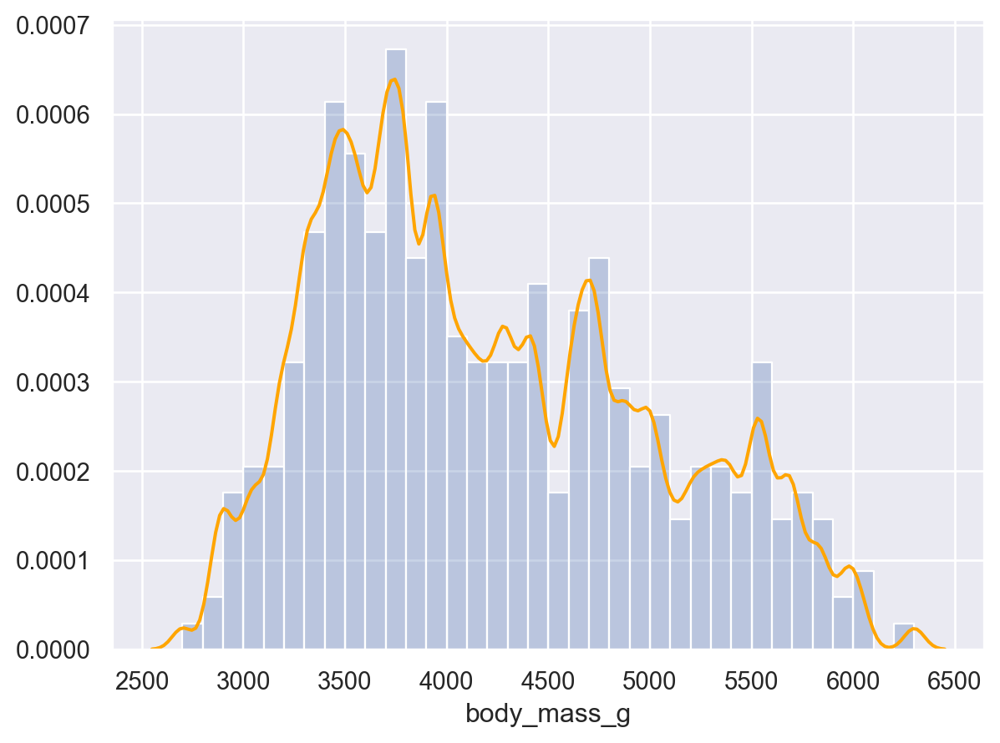
Visualizing relationships
A numerical and a categorical variable
Boxplot
Grouped distribution: histogram, frequency polygon, density plot


 Artwork by
Artwork by